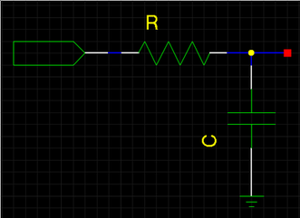

RC滤波的数字实现
信号与系统里面对数字滤波器的设计方法提供了方法论的指引，但在实际应用是会感觉难以使用，或者陷入公式的推导中间而无法对方法的本质做到“掌握”。这里对模拟系统离散化的一种方法——数值积分法的工程应用做一个简单的总结，并以RC滤波的设计为例子进行理论推导。
数字应用中常常需要对输入信号进行滤波处理，而达到较为平稳的输出结果，比如AD采样数据，如果直接使用采样进来的数据可能会发现比较大的抖动，在一个平均值附近进行无规律的跳动，这种数据可能无法直接用到数字控制或者监控系统。按照模拟的方法一般是加上低通滤波器滤除高频信号，得到较为平稳的采样数据。通过一些数学推导可以将该模拟滤波器通过数字编程实现，这里主要使用比较常用的模拟离散化方法——数值积分法，对原理的推导可以参考信号与系统理论，我们只利用结果进行推导。
RC滤波的模拟实现见下图：

根据拉普拉斯变换可以得到RC系统的s域传递函数
Y(s) = X(s) * 1/CS/(R + 1/CS) = X(s) * 1 / (RCS + 1)
通过数值积分法从s域变换为z域，其中T为采样频率
- 一阶后向差法：s = (1 - z(-1)) / T
- 一阶后向差法：s = (z - 1) / T
- 双线性变换法：s = 2/T * (z - 1)/(z + 1)
这里采用后向差法进行实例计算得到z域传递函数
Y(z) = X(z) * 1 / (RC * (1 - z(-1)) + 1)
最后可以得到数字实现公式
y(n) = y(n-1) / (1 + T/RC) + x(n) / (1 + RC/T)
实际数字计算时为了简化计算过程，通常采样移位的方式替代乘除法，因此需要取2^k为计算步长，因此取1 + RC/T = 2^k，得到最后的计算公式
y(n) = (1 - 1/2^k) * y(n-1) + (1/2^k) * x(n)
这样就可以通过简单的移位操作进行程序处理，得到滤波器的数字实现，编程简单实现如下：
int rc_filter(const int adc)
{
const int shift = 4;
static int adc_shift = adc;
adc_shift = adc_shift - (adc_shift >> shift) + adc;
return (adc_shift >> shift);
}
这样就通过很少的内存占用（adc_shift）实现深度为4的一阶RC滤波。
blog comments powered by Disqus
介一个IT民工甲，Firmware，嵌入式，数字电源，伪Geek，
80后伪奋青，Canon 450D，Arch Linux，Kindle，一介书生
www.jieyige.com